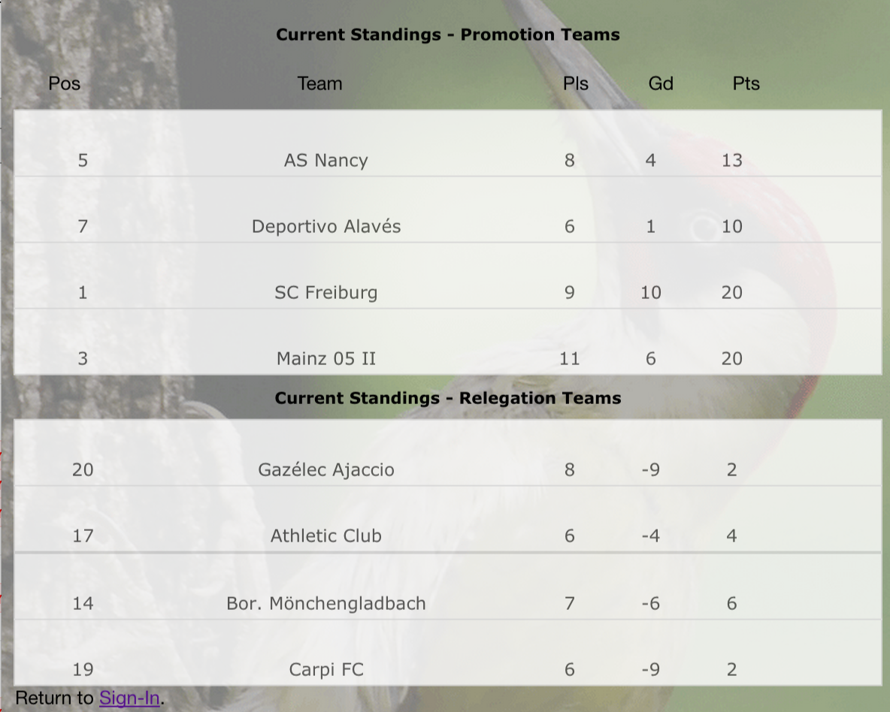
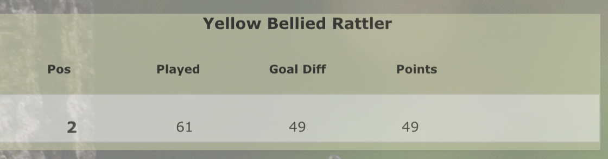

| Relegation Leagues | Promotion Leagues | ||
|---|---|---|---|
| French Ligue 1 | French Ligue 2 | ||
| La Liga Primera | La Liga Segunda | ||
| Bundesliga Lge 1 | Bundesliga Lge 2 | ||
| Serie A | Bundesliga Lge 3 |
You select a team from each league. From the Relegation leagues, select the team from each league you expect to finish last in the league. As you can see these are from the top leagues in continental Europe.
From the Promotion Leagues, you should select a team that you expect to win that league. These are from the most part from corresponding second tier leagues of the promotion leagues
Your Yaffle running total is the total points for your Promotion team minus the total points for your relegation teams.
So you want your promotion teams to score as many points as possible, and your relegation teams to score as few points as possible
Consider this Yaffle Player.

His Promotion Teams points are currently on 13, 10, 20 and 20 respectively
His Relegation Teams points are currently on 2, 4, 6 and 2 respectively
His Yaffle score is his cumualative promotion team points, after his cumulative relegation teams points have been subtracted.
In this case, (13 +10+ 20+20) = 63 minus (2+4+6+2) =14. His current Yaffle score is 63-14=49, as shown below:

Goal Difference is calculated in the same way, although games played are not.
The object of the game is to accrue the most points over the course of the season as normal.
Simply send in your 8 teams from the leagues above. You can view all the leagues here Send these in by email before Saturday 17th October to get onto the leaderboard
Given we are so late in the season to start this year, there will be no entry fees collected this year. It is free to enter. However the winners and losers will still be awarded the Yaffle Trophies at the end of the season as normal. Hopefully Substitutions will be allowed later in the year, which means there will be 4 trophies up for grabs at the end of the season
| Yaffle Champion for outright winner |
| The Roy Race Commemorative Plaque for Best Manager |
| The Mike Basset Award for Worst Manager |
| The Diano Ross Wooden Spoon for last place |